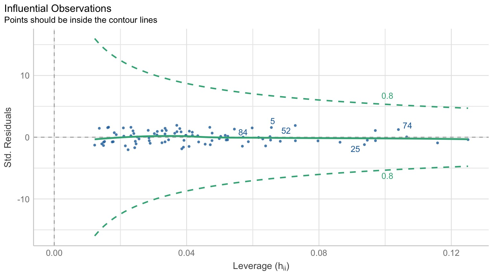
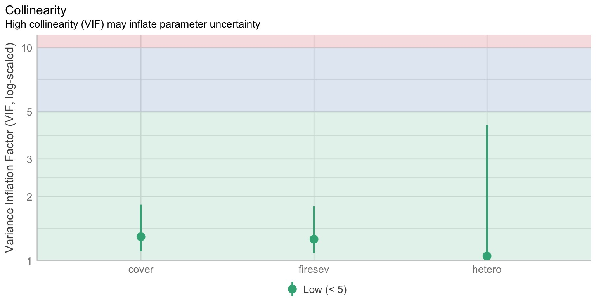
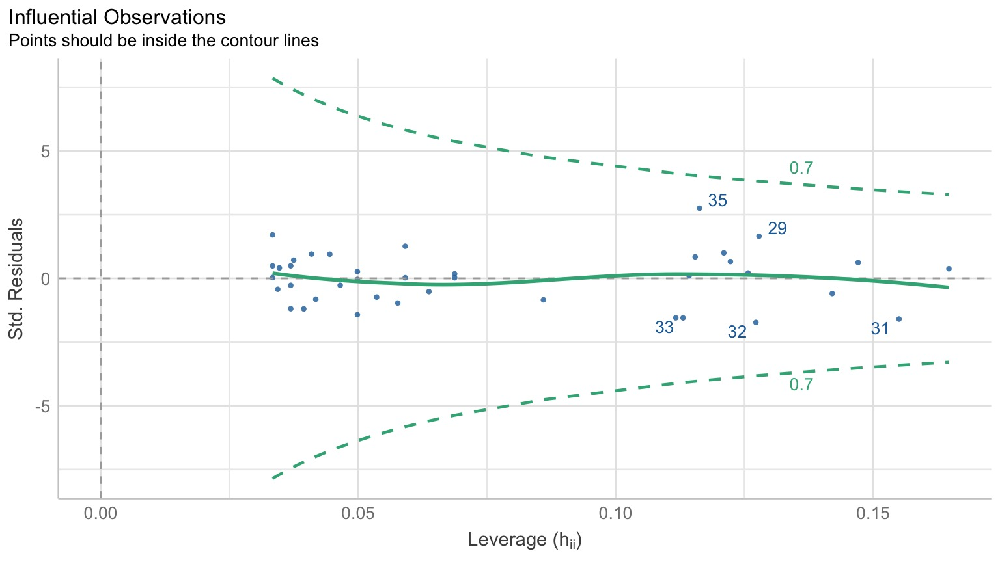

Multiple Predictor Variables in Linear Models
https://etherpad.wikimedia.org/p/607-many-predictors-2022
Data Generating Processes Until Now
One predictor with one response
Or multiple possible treatment levels, each 0/1
We Have Seen Many Predictors Before
\[y_{ij} = \beta_{0} + \sum \beta_{j}x_{ij} + \epsilon_{ij}, \qquad x_{i} = 0,1\]

The Expansiveness of the Linear Model
\[\Large \boldsymbol{Y} = \boldsymbol{\beta X} + \boldsymbol{\epsilon} \]
This equation is huge. X can be anything - categorical, continuous, squared, sine, etc.
There can be straight additivity, or interactions
Many Additive Predictors
Multiple Linear Regression
Many Categories with Many Levels
Combining Categorical and Continuous Predictors
Multiple Linear Regression: A Graphical View

Curved double-headed arrow indicates COVARIANCE between predictors
that we account for.
We estimate the effect of each predictor controlling
for all others.
Calculating Multiple Regression Coefficients with OLS
\[\boldsymbol{Y} = \boldsymbol{b X} + \boldsymbol{\epsilon}\]
Remember in Simple Linear Regression \(b =
\frac{cov_{xy}}{var_{x}}\)?
In Multiple Linear Regression \(\boldsymbol{b}
= \boldsymbol{cov_{xy}}\boldsymbol{S_{x}^{-1}}\)
where \(\boldsymbol{cov_{xy}}\) is the
covariances of \(\boldsymbol{x_i}\)
with \(\boldsymbol{y}\) and \(\boldsymbol{S_{x}^{-1}}\) is the
variance/covariance matrix of all Independent variables
(data from Jon Keeley et al.)
What causes species richness?
- Distance from fire patch
- Elevation
- Abiotic index
- Patch age
- Patch heterogeneity
- Severity of last fire
- Plant cover
Many Things may Influence Species Richness
Our Model
\[Richness_i =\beta_{0}+ \beta_{1} cover_i +\beta_{2} firesev_i + \beta_{3}hetero_i +\epsilon_i\]
Testing Assumptions
- Data Generating Process: Linearity
- Error Generating Process: Normality &
homoscedasticity of residuals
- Data: Outliers not influencing residuals
- Predictors: Minimal multicollinearity
Did We Match our Data?
How About That Linearity?
OK, Normality of Residuals?
OK, Normality of qResiduals?

No Heteroskedasticity?

Outliers?


Why Worry about Multicollinearity?
- Adding more predictors decreases precision of
estimates
- If predictors are too collinear, can lead to
difficulty fitting model
- If predictors are too collinear, can inflate SE of
estimates further
- If predictors are too collinear, are we really getting unique information
Checking for Multicollinearity: Correlation Matrices
cover firesev hetero
cover 1.0000000 -0.43713460 -0.16837784
firesev -0.4371346 1.00000000 -0.05235518
hetero -0.1683778 -0.05235518 1.00000000Correlations over 0.4 can be problematic, but, meh, they may be OK
even as high as 0.8.
Checking for Multicollinearity: Variance Inflation Factor
- Consider \(y = \beta_{0}
+ \beta_{1}x_{1} + \beta_{2}x_{2} + \epsilon\)
- And \(X_{1} = \alpha_{0}
+ \alpha_{2}x_{2} + \epsilon_j\)
- \(var(\beta_{1}) =
\frac{\sigma^2}{(n-1)\sigma^2_{X_1}}\frac{1}{1-R^{2}_1}\)
\[VIF = \frac{1}{1-R^2_{1}}\]
Checking for Multicollinearity: Variance Inflation Factor
\[VIF_1 = \frac{1}{1-R^2_{1}}\]

What Do We Do with High Collinearity?
- Cry.
- Evaluate why
- Can drop a predictor if information is
redundant
- Can combine predictors into an index
- Add them? Or other combination.
- PCA for orthogonal axes
- Factor analysis to compress into one variable
- Add them? Or other combination.
What does it all mean: the coefficients
\[Richness_i =\beta_{0}+ \beta_{1} cover_i +\beta_{2} firesev_i + \beta_{3}hetero_i +\epsilon_i\]| term | estimate | std.error |
|---|---|---|
| (Intercept) | 1.68 | 10.67 |
| cover | 15.56 | 4.49 |
| firesev | -1.82 | 0.85 |
| hetero | 65.99 | 11.17 |
- \(\beta_0\) - the
intercept - is the # of species when all other predictors are
0
- Note the very large SE
- All other \(\beta\)s are the effect of a 1 unit
increase on # of species
- They are not on the same scale
- They are each in the scale of species per unit of individual x
How Much Variation is Associated with the Predictors
| r.squared | adj.r.squared |
|---|---|
| 0.41 | 0.39 |
- 41% of the varition in # of species is associated with the
predictors
- Note that this is all model, not individual predictors
Comparing Coefficients on the Same Scale
\[r_{xy} = b_{xy}\frac{sd_{x}}{sd_{y}}\]
# Standardization method: basic
Parameter | Std. Coef. | 95% CI
-----------------------------------------
(Intercept) | 0.00 | [ 0.00, 0.00]
cover | 0.33 | [ 0.14, 0.51]
firesev | -0.20 | [-0.38, -0.01]
hetero | 0.50 | [ 0.33, 0.67]- For linear model, makes intuitive sense to compare strength
- Note, this is Pearson’s correlation, so, it’s in units of \(sd_y/sd_x\)
So, Uh, How Do We Visualize This?

Visualization Strategies for Multivariate Models
- Plot the effect of each variable holding the other variables
constant
- Mean, Median, 0
- Or your choice!
- Plot counterfactual scenarios from model
- Can match data (and be shown as such)
- Can be exploring the response surface
Added Variable Plot to Show Unique Contributions when Holding Others at 0
Plots at Median of Other Variables

Counterfactual Predictions Overlaid on Data

Counterfactual Surfaces at Means of Other Variables

This is an incredibly powerful technique at teasing apart different correlated influences!
Many Additive Predictors
Multiple Linear Regression
Many Categories with Many Levels
Combining Categorical and Continuous Predictors
We’ve Now Done Multiple Continuous Predictors
\[y_{i} = \beta_{0} + \sum \beta_{j}x_{ij}
+ \epsilon_{i}\]
\[\epsilon_{i} \sim \mathcal{N}(0,
\sigma)\]
We’ve Previously Done One Categorical Variable with Many Levels
\[y_{ij} = \beta_{0} + \sum
\beta_{j}x_{ij} + \epsilon_{ij}\]
\[\epsilon_{ij} \sim \mathcal{N}(0, \sigma),
\qquad x_{i} = 0,1\]
(hey, wait, isn’t that kinda the same model…. but where you can only belong to one level of one category?)
Now… Two Categories, Each with Many Levels, as Predictors
\[y_{ijk} = \beta_{0} + \sum \beta_{i}x_{ik}
+ \sum \beta_{j}x_{jk} + \epsilon_{ijk}\]
\[\epsilon_{ijk} \sim N(0, \sigma^{2} ),
\qquad x_{\_k} = 0,1\]
- This model is similar to MLR, but, now we multiple categories
instead of multiple continuous predictors
- This can be extended to as many categories as we want with linear
algebra
\[Y = \beta X + \epsilon\]
Multiple Predictors: A Graphical View
Curved double-headed arrow indicates COVARIANCE between predictors
that we account for.
We estimate the effect of each predictor controlling
for all others.
We Commonly Encounter Multiple Predictors in Randomized Controlled Blocked Designs

An Experiment with Orthogonal Treatments: A Graphical View

- This is convenient for estimation
- Observational data is not always so nice, which is OK!
Effects of Stickleback Density on Zooplankton


Units placed across a lake so that 1 set of each treatment was ’blocked’ together
Treatment and Block Effects
Multiway Categorical Model
- Many different treatment types
- 2-Way is for Treatment and block
- 3-Way for, e.g., Sticklebacks, Nutrients, and block
- 4-way, etc., all possible
- For experiments, we assume treatments are fully
orthogonal
- Each type of treatment type A has all levels of treatment type B - E.g., Each stickleback treatment is present in each block
- Experiment is balanced for
simple effects
- Simple effect is the unique combination of two or
more treatments
- Balance implies the sample size for each treatment combination is the same
- But, hey, this is more for inference, rather than estimation
- Simple effect is the unique combination of two or
more treatments
Fitting a Model with Mutiple Categorical Predictors
Call:
lm(formula = zooplankton ~ treatment + block, data = zoop)
Coefficients:
(Intercept) treatmenthigh treatmentlow block2 block3
3.420e+00 -1.640e+00 -1.020e+00 1.039e-15 -7.000e-01
block4 block5
-1.000e+00 -3.000e-01 Note the treatment contrasts!
Assumptions of Categorical Models with Many Categories
Independence of data points
Normality within groups (of residuals)
No relationship between fitted and residual values
Homoscedasticity (homogeneity of variance) of groups
No collinearity between treatments
Additivity of Treatments
The Usual on Predictions
Linearity (and additivity!)
What is Non-Additivity?
The effect of category depends on another
Non-Additivity is Parabolic
Normality!
HOV!
Collinearity!
- by definition, not a problem in an experiment
How do We Understand the Modeled Results?
Coefficients (but treatment contrasts)
Expected means of levels of each category
- Average over other categories
Differences between levels of each category
Coefficients and Treatment Contrasts
| term | estimate | std.error |
|---|---|---|
| (Intercept) | 3.42 | 0.31 |
| treatmenthigh | -1.64 | 0.29 |
| treatmentlow | -1.02 | 0.29 |
| block2 | 0.00 | 0.37 |
| block3 | -0.70 | 0.37 |
| block4 | -1.00 | 0.37 |
| block5 | -0.30 | 0.37 |
- Intercept is block 1, treatment control
- Other coefs are all deviation from control in block 1
Means Averaging Over Other Category
treatment emmean SE df lower.CL upper.CL
control 3.02 0.205 8 2.548 3.49
high 1.38 0.205 8 0.908 1.85
low 2.00 0.205 8 1.528 2.47
Results are averaged over the levels of: block
Confidence level used: 0.95 block emmean SE df lower.CL upper.CL
1 2.53 0.264 8 1.924 3.14
2 2.53 0.264 8 1.924 3.14
3 1.83 0.264 8 1.224 2.44
4 1.53 0.264 8 0.924 2.14
5 2.23 0.264 8 1.624 2.84
Results are averaged over the levels of: treatment
Confidence level used: 0.95 Can then visualize the Expected Means
And Look at Differences
contrast estimate SE df lower.CL upper.CL
control - high 1.64 0.289 8 0.972 2.3075
control - low 1.02 0.289 8 0.352 1.6875
high - low -0.62 0.289 8 -1.288 0.0475
Results are averaged over the levels of: block
Confidence level used: 0.95 It’s All One
The Linear Model \[\boldsymbol{Y} = \boldsymbol{b X} + \boldsymbol{\epsilon}\]
Multiple Continuous Predictors \[y_{i} = \beta_{0} + \sum \beta_{j}x_{ij} + \epsilon_{i}\]
Many Categorical Predictors \[y_{ijk} = \beta_{0} + \sum \beta_{i}x_{ik} + \sum \beta_{j}x_{jk} + \epsilon_{ijk}\]
Many Additive Predictors
Multiple Linear Regression
Many Categories with Many Levels
Combining Categorical and Continuous Predictors
Mixing Continuous and Categorical Predictors: Analysis of Covariance
\[y_{ij} = \beta_0 + \sum\beta_j x_{ij} + \beta_{j+1}x_{i} + \epsilon_{ij}\]
\[ x_{ij} = 0,1 \qquad \epsilon \sim \mathcal{N}(0,\sigma)\]
- Categorical Variable + a continuous predictor
- Often used to correct for a gradient or some continuous variable
affecting outcome
- OR used to correct a regression due to additional groups that may
throw off slope estimates
- e.g. Simpson’s Paradox: A positive relationship between test scores and academic performance can be masked by gender differences
What is Simpson’s Paradox: Penguin Example
What is Simpson’s Paradox: Penguin Example
Note: This can happen with just continuous variables as well
Neanderthals and Categorical/Continuous Variables

Who had a bigger brain: Neanderthals or us?
The Means Look the Same…
But there appears to be a Relationship Between Body and Brain Mass
And Mean Body Mass is Different

Categorical Model with a Continuous Covariate for Control
Evaluate a categorical effect(s), controlling for a
covariate (parallel lines)
Groups modify the intercept.
Assumptions are the Same!
Independence of data points
Normality and homoscedacticity within groups (of residuals)
No relationship between fitted and residual values
Additivity of Treatment and Covariate (Parallel Slopes)
Linearity Assumption KEY
Test for Parallel Slopes
We test a model where \[y_{ijk} = \beta_0 + \beta_{1}x_1 + \sum_{j}^{i=1}\beta_j x_{ij} + \sum_{j}^{i=1}\beta_{k}x_1 x_{ij} + \epsilon_ijk\]| term | estimate | std.error |
|---|---|---|
| (Intercept) | 4.2534953 | 0.9768911 |
| speciesrecent | 1.1809274 | 1.0623095 |
| lnmass | 0.7135471 | 0.2270081 |
| speciesrecent:lnmass | -0.2594885 | 0.2481073 |
VIF Also Very Important
Usual Normality Assumption
Usual HOV Assumption
Usual Outlier Assumption

The Results
- We can look at coefficients
- We can look at means adjusted for covariate
- Visualize! Visualize! Visualize!
Those Coefs
| term | estimate | std.error |
|---|---|---|
| (Intercept) | 5.19 | 0.40 |
| speciesrecent | 0.07 | 0.03 |
| lnmass | 0.50 | 0.09 |
- Intercept is species = neanderthal, but lnmass = 0?
- Categorical coefficient is defiation from intercept for recent
- lnmass coefficient is change in ln brain mass per change in 1 unit of ln mass
Groups Means at Mean of Covariate
| species | emmean | SE | df | lower.CL | upper.CL |
|---|---|---|---|---|---|
| neanderthal | 7.272 | 0.024 | 36 | 7.223 | 7.321 |
| recent | 7.342 | 0.013 | 36 | 7.317 | 7.367 |
Can also evaluate for other levels of the covariate as is interesting
Difference Between Groups at Mean of Covariate
| contrast | estimate | SE | df | lower.CL | upper.CL |
|---|---|---|---|---|---|
| neanderthal - recent | -0.07 | 0.028 | 36 | -0.128 | -0.013 |
Vsualizing Result Says it All!

Or Plot at the Mean Level of the Covariate
Extensions of the Linear Additive Model
- Wow, we sure can fit a lot in there!
- Categorical is just continuous as 0/1
- So, we can build a LOT of models, limited only by our imagination!